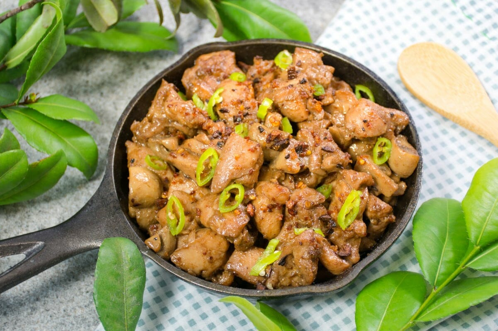

Chicken Salpicao Recipe
What is Chicken Salpicao?
Chicken Salpicao is a Filipino dish that is typically made by sautéing small cubes of chicken with garlic and olive oil. Soy sauce or Worcestershire sauce is often added for flavor. The dish is buttery and garlicky to perfection, and can be served over steamed white rice.
Ingredients
3 (4 ounce) skinless, boneless chicken breasts, cut into bite-sized cubes
½ teaspoon garlic salt
½ teaspoon ground black pepper
½ teaspoon paprika
2 tablespoons olive oil
5 cloves garlic, chopped
1 ½ tablespoons Worcestershire sauce
½ tablespoon soy-based liquid seasoning (such as Maggi®)
1 serrano pepper, sliced diagonally
Instructions / How to Cook
1. Season chicken with garlic salt, black pepper, and paprika. Marinate for 15 minutes.
2. Heat oil in a pan over medium heat. Add garlic and saute until almost brown, about 1 minute. Add chicken and mix to keep garlic from burning. Add Worcestershire and liquid seasoning. Reduce heat and let simmer until chicken is almost no longer pink in the center, 5 to 7 minutes. Stir in serrano pepper and simmer for another 2 minutes. Transfer to a serving dish.